Pipettor Teaching, Manual
Manual Teaching Tips
Previous Z Max - This button brings the pipettor to the last stored Z height.
- At times this may be too far down causing a Z-axis stall.
- A work around is using the Shift key.
Shift Key - The shift key on the keyboard drops the pipettor down half of the distance from the previous known Z and the current location. This allows for a much faster manual teach if the Z-Max position is too low and you cannot use the Z-Max button.
 Manual Teaching to the Reagent Bay
Manual Teaching to the Reagent Bay
- Remove the Reagent Bay cover prior to beginning the procedure.
- Insert the Reagent Bay teach tool into Lane 1.
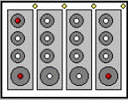
Note—The following points must be taught in the following order:
- Left Rear
- Left Front
- Right Front
- Select Prev Z.
The Pipettor moves close to the first teaching point (Left Rear) of the Reagent Bay teach tool. The teaching points are holes in the base of the Reagent Rack in the first and last positions.
- Teach to the middle of the hole.
- Select OK.
- Select Prev Z.
- Teach to the next position (Left Front) to the center of the teach hole.
- Insert the Reagent Bay teach tool into Lane 4.
The Pipettor moves to the right front hole.
- Select Prev Z.
- Teach to the middle of the hole.
- Select OK.
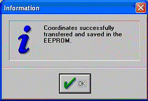
Manual Teaching to the Sample Bay
- Insert 2 sample tubes (size 12/75) into positions 1 and 15 of a Sample Rack and insert the rack into Lane 1 of the Sample Module.
- Insert one sample tube (size 12/75) into position 15 of a Sample Rack and insert the rack into Lane 8 of the Sample Module.
- Ensure a Tip Tray is in the Tip Tray position of the rear tray drawer 1 (left drawer) and a tip is inserted in the left rear position of that tray.
- Select Pick Tip.
- If there is a tip, answer Yes to the following question. When a tip is missing, select No and restart the teaching sequence.
- Remove the Sample Bay cover.
- From the Main screen, select the Sample Bay icon to start the teaching sequence with a tip. The tip and the Adjust position window appear.
Note—The following points must be taught in the following order:
- Left Rear
- Left Front
- Right Front
- The Sample Pipettor moves to the first teaching position.
- Teach the tip to the middle and bottom of the first position.
- The Pipettor is not allowed to touch the bottom surface at all, but the sample tube must have a clearance from 2 mm–3 mm. Test the clearance by lifting the sample tube up.
- Repeat steps 8 and 9 for the remaining two positions.
- When the teaching is complete, select Eject Tip.
Manual Teaching to the Sample Dispense Slot
- If a teach cap is present, select the Eject Cap button. Sample Dispense is manually taught without a teach cap.
- Select the Sample Dispense Slot.
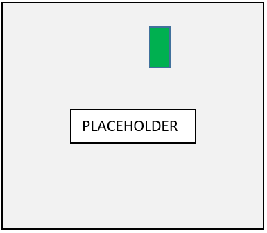
- When prompted "Shall the position be taught automatically?", select No.
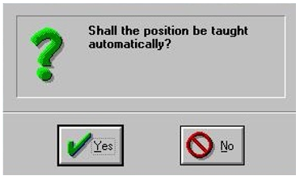
- When prompted "Reference Position OK?", select OK.
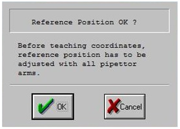
- Follow manual teach procedures on the UI to position the Back Sample Dispense Slot location (MTU Multi-tube unit—Container used to process tests in the instrument. An MTU contains five separate reaction tubes. The MTU is moved through the instrument by the linear distributor and includes five tiplets for pipettiing to be used in the mag wash station. position 1):
- Using the manual controls, lower the pipettor until the DiTi tip is flush with the lower step of the Sample Dispense Slot over MTU tube 1 (or the back MTU location).
- Using the picture and measurements below align the pipettor in the x-axis. Approximately 7-8mm away from the left or right edge of the Sample Dispense Slot.
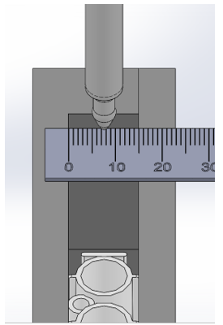
- Using the picture and measurement as guidance, position the y-axis approximately 5mm away from the back edge of the Sample Dispense Slot.
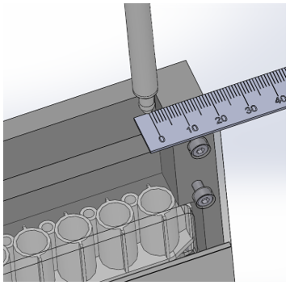
- After both the X and Y axis are in place, step up the Z direction approximately 240 steps (+/- 40 steps). Verify the height is approximately 12mm (+/- 2mm) above the top of the Sample Dispense Slot.
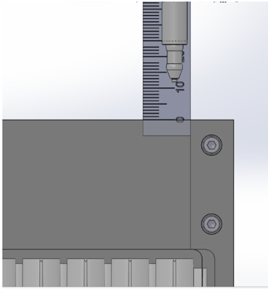
- Select the OK button.
- Position the Front Sample Dispense Slot location (MTU position 5):
- Using the manual controls, lower the pipettor until the DiTi tip is flush with the lower step of the Sample Dispense Slot over MTU tube 5 (or the back MTU location).
- Using the picture and measurements below align the DiTi in the x-axis, approximately 7-8mm away from the left or right edge of the Sample Dispense Slot.
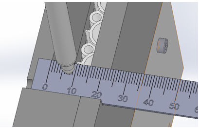
- Raise the Z height up 80 steps. Using the picture and measurements as guidance, position the y-axis approximately 10mm away from the front edge of the Sample Dispense Slot.
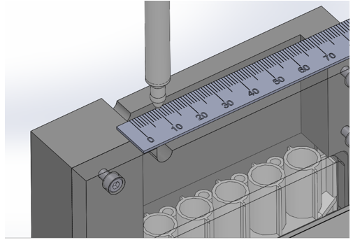
- After both the X and Y axis are in place, step up in the Z direction approximately 160 steps (+/- 40 steps). Verify the height is approximately 12mm (+/- 2mm) above the top of the Sample Dispense Slot.
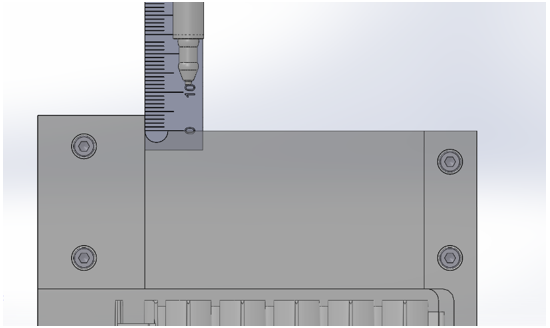
- Select the OK button and the Sample Dispense Slot is now manually taught.
- Transfer coordinates.
- Now that the pipettor is close, run Autoteach on the chute (with cap).
- Transfer and quit.
Manual Teaching to the TCR Carousel
- Select the TCR
The Adjust Position screen appears.
- Orient the TCR Carousel according to the following illustration.
The right Pipettor arm moves close to the teaching point.
- The tip must be in the middle of the bore.
- After the teaching has completed, select OK in the Adjust Position screen.
Manual Teaching to the Tip Eject Chute
- If a teach cap is present, select the Eject Cap button.

Note—Eject Chutes are manually taught without a teach cap. - Select the Reagent (left) or Sample (right) Tip Eject Chute.
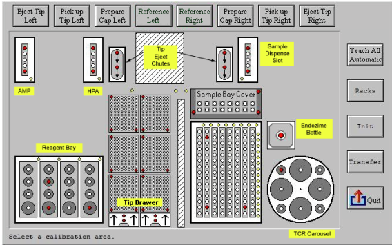
- When prompted "Shall the Position be taught automatically?", select No.
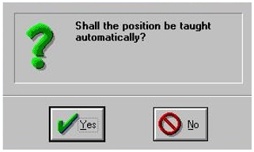
- When prompted "Reference Position OK?", select OK.
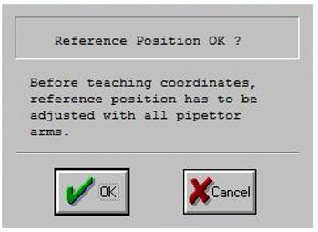
- The Adjust Position window is used to manually position the pipettor at the rear chute location (back side). Use the keyboard to move the pipettor into the position shown below.
- To move in X, use the left/right arrow keys.
- To move in Y, use the up/down arrow keys.
- To move in Z, use the PageUp/PageDown keys. (Position the pipettor black box flush with the top of the Tip Chute.)
- Make adjustments to the Stepsize (increase or decrease steps) using the slider bar. Decrease the Stepsize as the pipettor nears the eject chute.
- Once in position, select OK.
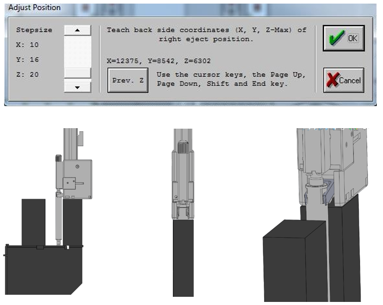
- The Adjust Position window is displayed to position the pipettor at the front chute (front side). Use the keyboard to move the pipettor into position as shown below.
- To move in X, use the left/right arrow keys.
- To move in Y, use the up/down arrow keys.
- To move in Z, use the PageUp/PageDown keys. (Position the pipettor black box flush with the top of the Tip Chute.)
- Once in position, select OK.
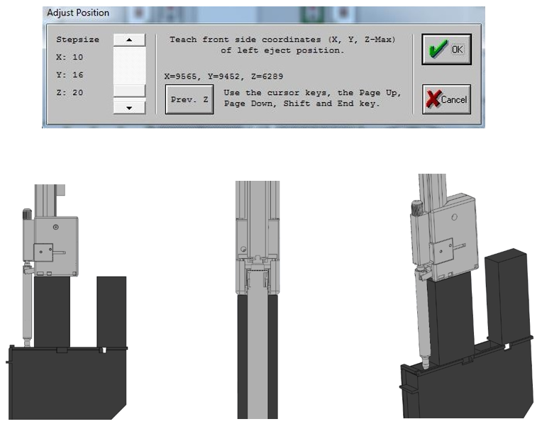
- The Adjust Position window is used to set the Z-Start position. Use the keyboard and a ruler to move the pipettor into the position shown below.
- To move in Z, use the PageUp/PageDown keys.
- Using a ruler, position the pipettor up 12mm from the top of the front tip chute.
- Make adjustments to the Stepsize (increase or decrease steps) using the slider bar. Decrease the Stepsize as the pipettor nears the eject chute.
- Once in position, select OK.
Note—Instead of steps a-d, usually just selecting the Previous Z button moves the pipettor to an acceptable position, then hit OK. Steps a-d can be used if this doesn't work. 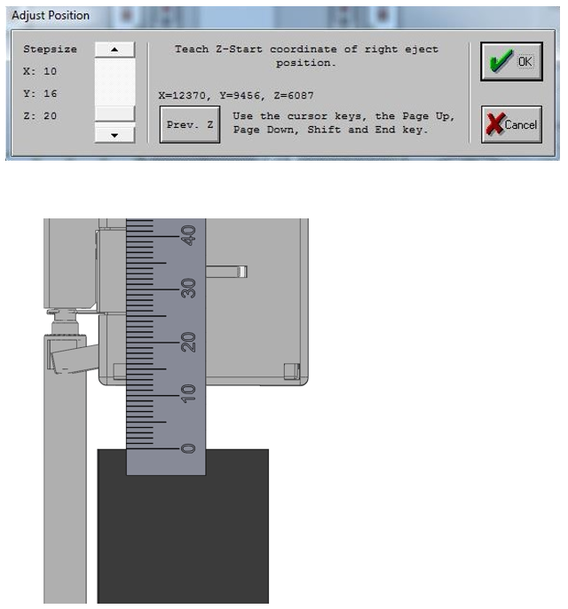
- Transfer coordinates.
- Now that the pipettor is close, run Autoteach on the chute (with cap).
- Transfer coordinates.
Manual Teaching to the Tip Drawers
- Select the tip drawer to be taught by selecting the appropriate drawer.
Note: Do not select individual trays.
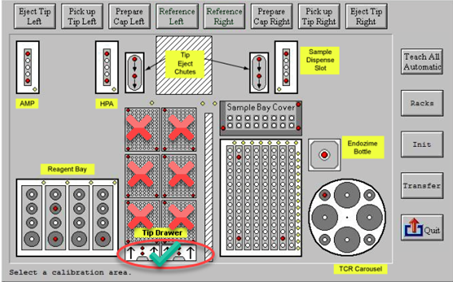
 button at the top of the page to send feedback, comments, or change requests.
button at the top of the page to send feedback, comments, or change requests.